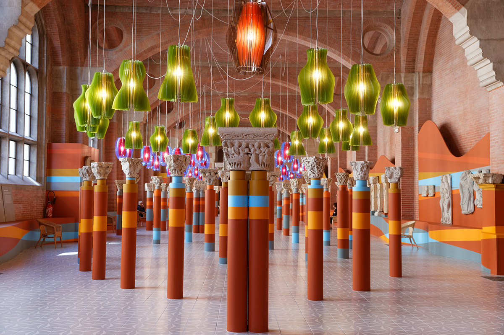

Depuis plus de 25 ans, Fabrice Sendra perpétue l'art de la peinture décorative : frises XIXe siècle, trompe-l'œil, décors patrimoniaux. Du Musée des Augustins aux intérieurs de particuliers.
La salle mythique du Musée des Augustins, les frises des hôtels particuliers toulousains… Chaque décor raconte une histoire.
— Fabrice Sendra, FondateurDe la peinture classique aux décors les plus raffinés, Stylobat maîtrise chaque geste avec la précision d'un art ancestral.
Travaux de peinture pour particuliers et professionnels. Préparation soignée, finitions impeccables, matériaux premium pour un résultat durable.
Reproduction fidèle de frises ornementales du XIXe siècle. Motifs floraux, géométriques et architecturaux peints à la main dans la pure tradition.
Création de trompe-l'œil et peintures murales : faux marbres, faux bois, ciels, paysages. L'illusion au service de la beauté.
Restauration et création de décors pour les intérieurs d'hôtels particuliers. Respect du patrimoine, exigence du détail.
Peinture de bureaux, commerces, espaces publics. Réactivité, propreté et respect des délais pour les professionnels.
Intervention sur bâtiments classés et lieux historiques. La salle du Musée des Augustins en est la preuve vivante.
Chaque projet est une œuvre. Voici quelques réalisations qui témoignent de notre savoir-faire.

Fondateur de Stylobat Peinture, Fabrice est un artisan peintre décorateur qui conjugue savoir-faire traditionnel et exigence contemporaine.
Spécialiste des frises décoratives XIXe siècle et du trompe-l'œil, il a notamment réalisé les décors de la salle mythique du Musée des Augustins à Toulouse — un lieu d'exception qui témoigne de son talent.
Des intérieurs d'hôtels particuliers aux chantiers professionnels, Fabrice intervient avec la même passion : celle de sublimer chaque espace.
Échanger avec FabriceParticulier ou professionnel, Fabrice Sendra vous accompagne. Devis gratuit, conseils personnalisés.